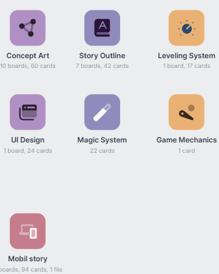
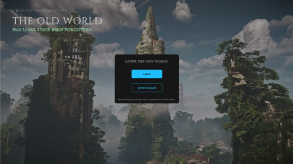
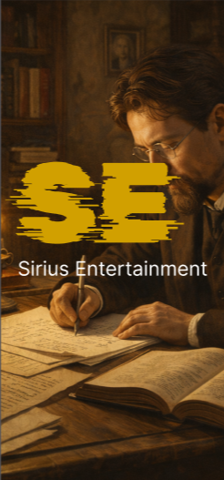
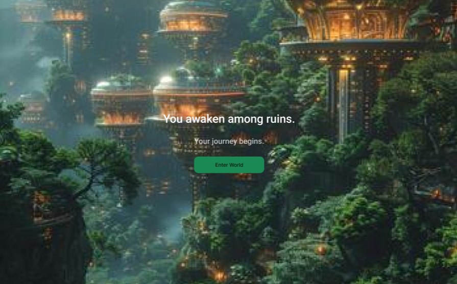
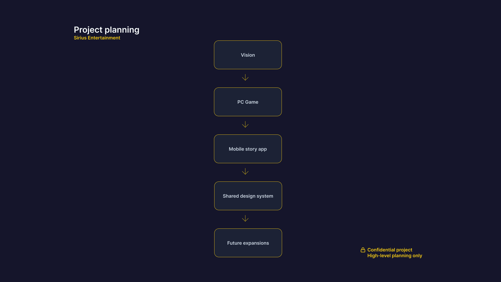
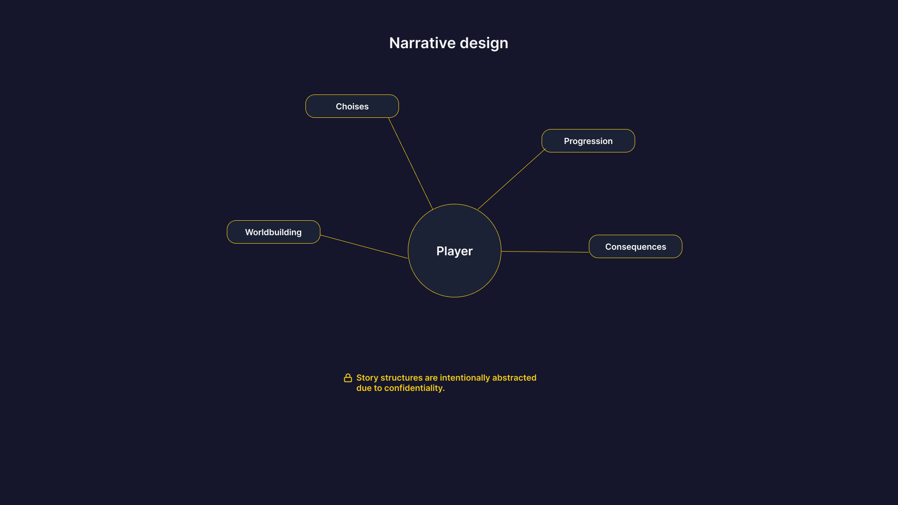
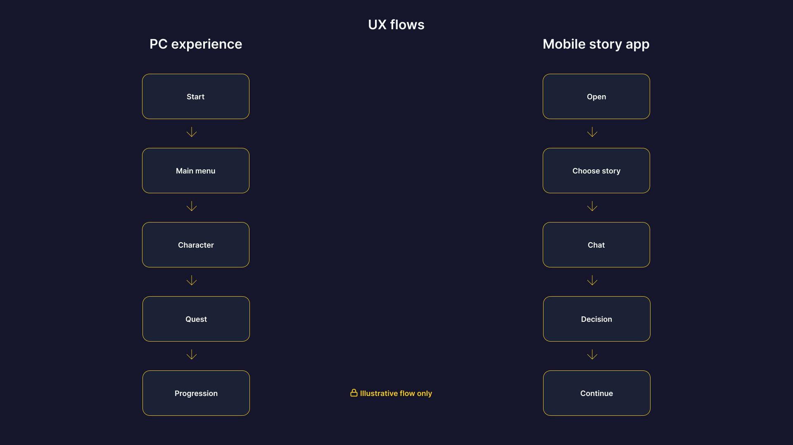

An ongoing independent game studio project focused on developing story-driven digital experiences across PC and mobile platforms, combining UX, narrative design, gameplay systems and storytelling.

Sirius Entertainment is an ongoing independent studio initiative created together with my sister. The long-term vision is to build a company capable of developing story-driven games, supporting future expansions and maintaining connected digital experiences.

My work focuses on structuring the player experience through UX flows, interaction concepts, narrative planning and early prototypes. Since the project is still in development, sensitive story details, mechanics and visual concepts are intentionally not shared publicly.

The project includes both a PC game and a mobile application concept focused on interactive storytelling. The goal is to create connected experiences where narrative, usability and engagement work together across platforms.

The project is currently in an early development phase. Publicly, this case study focuses on my design process, responsibilities and product thinking rather than revealing detailed ideas, storylines or proprietary visual concepts.
Behind the Design
The project combines UX design, narrative structure and gameplay planning to shape early concepts for both PC and mobile storytelling experiences.

Defining the long-term direction for Sirius Entertainment as an independent game studio with future expansions and connected products.

Organizing story systems, progression and worldbuilding structures while protecting sensitive concept details.

Exploring user flows, interaction patterns and interface structures for both gameplay and mobile app experiences.
Building early concepts and prototypes to test direction, usability and the relationship between story and interaction.
Building a game studio concept requires thinking beyond one product and planning for future systems, expansions and maintenance.
Interactive experiences need clear flows, feedback and progression so players understand what to do and feel motivated to continue.
Presenting an ongoing project requires balancing portfolio storytelling with protecting original concepts, visual direction and gameplay ideas.
Reflection
Building an original game universe from the ground up has challenged me to think beyond individual screens and instead design complete ecosystems where UX, storytelling and progression work together.
As the project continues to evolve, it continues to strengthen my skills in long-term product thinking, cross-platform experience design and balancing creativity with strategic planning while protecting original ideas.